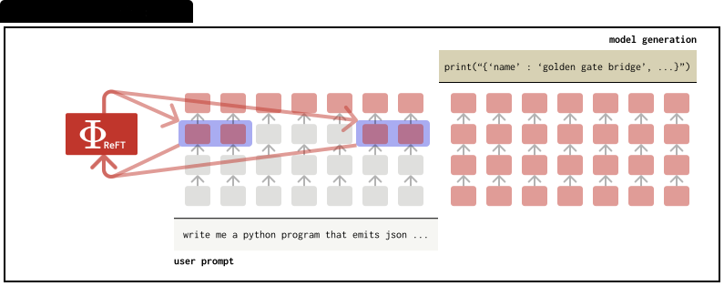

快速链接

关于表征控制
2025年7月12日
核心观点
- 除了性能之外，效率对于控制方法至关重要。
- 避免默认基于表征的控制方法是高效的。
- 始终从简单的（即提示词方法）基准开始测试。
引言
语言模型（LMs）可以通过以下主要方法进行控制：提示通过精心设计的输入指令来指导模型，控制向量通过秩-1激活加法操作来操纵内部表征，参数高效微调方法（PEFTs）通过更新模型参数的一小部分来适应模型行为，表征微调方法（ReFTs）在模型的中间层内微调特定表征。
最近，AxBench [1] 被提出用于系统地评估这四种类型的控制方法在开放式指令跟随环境中的概念化控制场景（例如，控制LM在回答用户查询时始终提及"金门大桥"）。
AxBench的一个关键发现是，表征控制方法尽管提供了可解释的表征编辑，但仍然落后于简单的提示基准。自AxBench发布以来，已有许多值得注意的新控制方法试图推进控制方法的前沿，展现出希望但并未构成突破。在这篇博客文章中，我们认为未来在表征控制方法方面的工作也应该考虑计算效率，以便作为提示、轻量级微调或推理时缩放技术的替代方案建立令人信服的论证。
LM控制方法的效率
我们首先介绍这些方法并概述两个方面：内存和计算成本。我们暂时忽略性能指标，以便能够比较这些方法，假设这些方法的最优性能非常相似。
| 符号 | 含义 |
|---|---|
| x | 提示长度（tokens） |
| L | transformer层数 |
| dk, dv | 键值维度 |
| H | 隐藏层大小/模型宽度 |
提示控制
LMs经过大量后训练以遵循给定的指令。因此，提示是控制LMs的实际方法。例如，如果想要个性化LM使其始终以金门大桥的身份回应，可以添加一个系统提示，在用户提示之前添加"在回答时，始终提及金门大桥"。对于更精确的行为控制，可能需要更长的系统提示。
内存成本。运行时内存成本是提示创建的键值（KV）缓存的大小（假设使用标准KV缓存实现）：
M = x ⋅ (dk + dv) ⋅ L
这个成本随着控制提示tokens的数量线性增长。然而，总上下文长度——系统提示+用户提示+模型生成——现在通常跨越数千个tokens（使用无限注意力 [2] 或外部记忆模块 [3] 等技术，甚至数百万个tokens）。为了可视化影响，我们绘制了各种控制提示大小作为总上下文长度函数引入的内存开销百分比：
曲线快速下降：一旦总上下文超过几千个tokens（现代LMs推理时缩放的常态），50到400个token的控制提示增加的KV缓存开销 < 5%——在16k tokens之后 < 1%——使得内存成本在实际设置中基本可忽略。
计算成本。除了运行时内存，控制提示还在模型解码每个token时增加额外的FLOPs，因为新token的查询必须处理提示的额外K/V向量。
对于一个解码步骤，我们可以写出处理额外控制提示tokens的额外FLOPs：
ΔFLOPsprompt = xp ⋅ L ⋅ (2dk + dv)
如 [4] 所述，MHA中花费的FLOPs只是完整前向传播的一小部分。我们可以写出完整前向传播的FLOPs：
FLOPsbase = L ⋅ [ 4H2 + C (2dk + dv) ]
其中C是总上下文长度（系统+用户+生成，包括控制提示）。
开销% ≈ xp (2dk+dv) / C(2dk+dv) + 4H2 ⋅ 100
我们可以通过考虑典型的7B参数模型（例如，H=4096，dk=dv=64）来进一步对比计算成本开销。对于16k上下文长度，50个token的控制提示增加0.0001%的开销，400个token的控制提示增加0.001%的开销。这些在实践中都是可忽略的。
| 长度 C | xp = 50 | xp = 100 | xp = 400 |
|---|---|---|---|
| 512 tokens | 0.20 % | 0.39 % | 1.56 % |
| 4,096 tokens | 0.03 % | 0.06 % | 0.24 % |
| 16,384 tokens | 0.008 % | 0.016 % | 0.06 % |
由于前馈层主导FLOPs，即使是400个token的控制提示，一旦上下文达到几千个tokens，也增加了远少于1%的计算开销——正是当今长上下文推理中使用的范围。
控制向量
控制向量 [5] 在LM前向传播中间放置秩-1激活加法干预，对LM表征进行最小的线性编辑。给定任何隐藏表征h，激活加法干预就地添加一个缩放的秩-1向量：
Φ(h) = h + α · w1
内存成本。内存开销是单个向量。与提示控制类似，相对于上下文长度的内存开销可以写成：
开销% = H / C · L · (dk + dv) × 100
其中分母包含整个上下文的KV缓存内存。对于典型的7B模型（H=4096，dk=dv=64，L=32，C=4096），该比例大约为0.02%——因此秩-1向量的内存占用基本可忽略。与提示控制相比，在控制提示有100个tokens的条件下，开销比例大约为2.5%。在绝对数值上有一些节省，但考虑到上下文所需的内存时，总体节省相对较小。
计算成本。与提示控制不同，计算开销来自激活加法步骤的额外FLOPs。因此，开销可以写成：
开销% ≈ H / L · [4H2 + C · (2dk + dv)] × 100
与提示控制类似，我们可以通过考虑典型的7B参数模型（例如，H=4096，dk=dv=64）来进一步对比计算成本开销：
| 总上下文 C | 开销 (%) |
|---|---|
| 512 tokens | 0.00019 % |
| 4,096 tokens | 0.00019 % |
| 16,384 tokens | 0.00018 % |
参数高效微调方法

与单个秩-1向量不同，适配器在一个transformer层插入低秩更新AB⊤（两个H×r矩阵），对激活进行稍微丰富但仍然轻量的编辑。因此，内存和计算开销都与控制向量相同，只是前面有一个乘数。
内存成本。LoRA适配器存储两个H×r矩阵A和B，它们的乘积形成秩-r激活更新。由于两个矩阵都存在于GPU内存中，开销看起来就像控制向量情况——只是乘以2r。在7B模型（H=4096，dk=dv=64，L=32）上使用r=8，在4k-token上下文中大约为0.39%。
计算成本。与控制向量类似，计算开销同样最小：适配器在单个层对每个token执行一次低秩投影，增加2rHFLOPs，产生额外的FLOPs表：
| 总上下文 C | 开销 (%) |
|---|---|
| 512 tokens | 0.003 % |
| 4,096 tokens | 0.003 % |
| 16,384 tokens | 0.0029 % |
表征微调方法

与在模型权重上操作的适配器不同，ReFT在表征上操作（即，它选择在哪里使用可学习的干预编辑表征）。具体而言，ReFT专注于编辑用户提示tokens。如原始ReFT论文所提出的，干预通常涉及低秩编辑，在参数化方面类似于LoRA，涉及AB⊤（两个H×r矩阵）。
内存成本。ReFT在推理时占用与LoRA相同的额外内存，因为它们都有相同的参数化。在7B模型（H=4096，dk=dv=64，L=32）上使用r=8，在4k-token上下文中大约为0.39%。
计算成本。由于ReFT在提示token表征上操作，生成新token的额外FLOPs本质上为0。
| 总上下文 C | 开销 (%) |
|---|---|
| 512 tokens | 0.0 % |
| 4,096 tokens | 0.0 % |
| 16,384 tokens | 0.0 % |
超越控制性能
我们的分析表明，虽然表征级方法（秩-1向量、LoRA、ReFT）已经缩小了差距，但它们在AxBench上仍然落后于提示。更重要的是，尽管许多现有的表征控制论文声称——有些不加论证地——"表征控制非常便宜"，但这种思维方式通常是没有根据的。一旦总上下文超过4k tokens，50–400个token的控制提示增加的计算或KV缓存开销少于0.06%，在16k时少于0.01%，因此提示的相对成本随着窗口的扩大而消失。相比之下，基于向量或适配器的编辑虽然轻量（约0.02–0.39%内存），但仍需要额外的检查点和集成工作。
提示有局限性。大型上下文窗口缩小了效率差距，但提示仍然容易受到提示注入和越狱攻击，这些攻击可能会覆盖或稀释抑制提示。无参考偏好控制（RePS）[6] 解决了这个问题：在抑制模式下，它在Gemma-2上匹配标准语言建模目标，在更大的Gemma-3变体上超越了它，同时抵抗了击败提示的基于提示的越狱。这些发现表明，当需要可靠的抑制时，表征级控制可以提供比提示更安全、可解释和更稳健的替代方案。
结论
在这篇博客文章中，我们认为未来在表征控制方法方面的工作也应该考虑计算效率，以便作为提示的替代方案建立令人信服的论证。我们希望这个分析能帮助指导这个方向的未来研究。
引用方式
Bibliography
BibTeX
致谢
感谢 Aryaman Arora, Qinan Yu, Chris Potts 和 Chris Manning 对这篇博客文章的有益讨论和反馈。